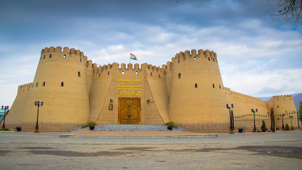
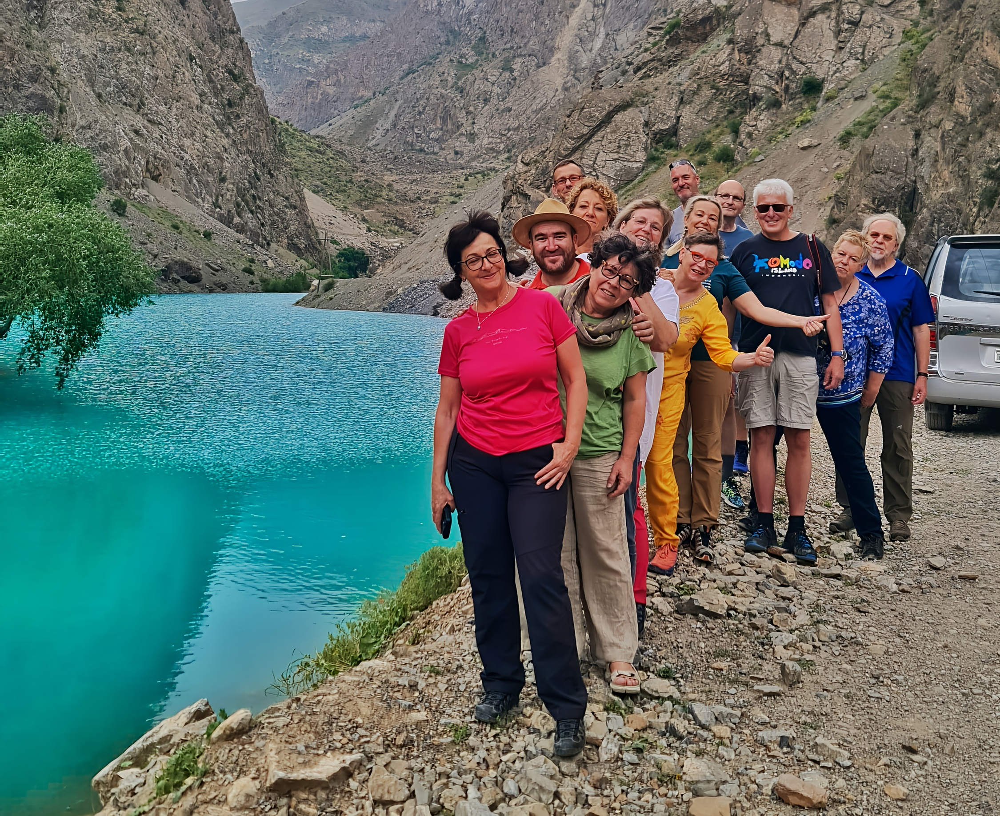

2.Tag: Taschkent Taschkent hat eine mehr als 2200-jährige Geschichte. Tchach (früherer Name der Stadt) war ein wichtiges Handels- und Kulturzentrum Zentralasiens und hieß die Karawanen der Seidenstraße willkommen. Unter der Chaybaniden-Dynastie wurden im 16. Jahrhundert große Medresen und Moscheen gebaut, dies war das goldene Zeitalter der Stadt: Der Hazrat-Imam-Komplex einschließlich der Madrasa von Barak Khan (16. Jahrhundert), der alten Jami-Moschee (Freitag), die noch heute aktiv ist, und dem Mausoleum von Kaffal Chachi – dem Wallfahrtsort mit dem Grab eines großen Philosophen, Dichters und Doktor des Islam, der im 10. Jahrhundert lebte; der Große Basar Tcharsu, sehr schön und sehr typisch. Taschkent Metro, die erste in Zentralasien, deren Besonderheit darin besteht, dass jede ihrer Stationen von den größten Künstlern des Landes nach einem bestimmten Thema dekoriert wurde: Baumwolle, der usbekische Dichter Alicher Navoi usw.... Panoramatour: Amir-Temur-Platz, Unabhängigkeitsplatz, Theaterplatz usw. Übernachtung im Hotel.

3.Tag: Taschkent – Chudschand (Tadschikistan) Frühstück im Hotel. Transfer zur tadschiko-usbekischen Grenze. Zollformalität. Transfer nach Chudschand. Ankunft und Besichtigung in Chudschand. Chudschand liegt nicht weit entfernt vom Fergana-Tal am Fluss Syr Darja. Es ist eine weitere alte Stadt mit Geschichte, die auf Cyrus den Großen von Persien und Alexander den Großen zurückgeht. Heute ist es die zweitgrößte Stadt in Tadschikistan mit dem größten Markt von Tadschikistan – Panjschanbe Basar. Die Stadtführung von Chudschand umfasst den Basar und die angrenzende Maslihaddin-Moschee, das historische Museum von Chudschand und den Arbob Palast. Am Abend werden wir einen Spaziergang im Kmaoli Chudschand Park machen und die Lenin Statue sehen. Abendessen. Übernachtung im Hotel.

4.Tag: Chudschand - Istaravschan – Pendschikent Von Chudschand fahren wir zuerst nach Istarafschan und schließlich nach Pendschikent. Istarafshan wurde im 6. Jahrhundert v. Chr. von Kyros dem Großen gegründet und feierte vor kurzem seinen 2500. Jahrestag. Die Timuriden des 14. Jahrhunderts nannten sich dann Istaravshan Ura-Tube und die Handwerker der Stadt waren in Zentralasien hoch angesehen. Heute ist Istarafschan in Tadschikistan bekannt für seine Schmiede, welche unter anderem Messer von hoher Qualität fertigen. Wir werden die Werkstätten der Schmiede nahe dem Eingang des Marktes besuchen. Weiterfahrt nach Pendschikent. Die Straße von Istaravschan nach Pendschikent ist sehr malerisch und überquert den Shachriston Pass. Ankunf in Pendschikent. Abendessen. Übernachtung im Hotel.

5.Tag: Pendschikent – Sieben Seen – Pendschikent Frühstück und Besuch der Überreste des antiken Sarazm (5500 Jahre Geschichte). Bei archäologischen Ausgrabungen wurden Spuren des antiken Bewässerungssystems entdeckt. Im vierten Jahrtausend v. Chr. wurde Sarazm zu einem großen Zentrum der Metallurgie mit der Verarbeitung von Gold, Silber, Kupfer usw. Etwa eine halbe Stunde von Pendschikent fahren wir Richtung Duschanbe und biegen wir nach rechts ab und folgen einer Bergstraße, die uns durch die Shing Schlucht mit ihren berühmten sieben Perlen Tadschikistans führt – sieben Bergseen mit jeweils eigener Farbe, Mikroklima und Flora. Wir werden sicherlich einen Fotostopp an jedem der Seen machen. Die Straßen sind sehr schlecht und steil abfallend, aber wir haben Glück, erfahrene und Fahrer zu haben. Nach dem Mittagessen (Picknick) fahren wir weiter zum sechsten See mit einem kurzen
Spaziergang in Podrud Dorf auf dem Weg. Vom sechsten See wandern wir in weniger als einer Stunde bis zum 7. und letzten See –Hazorchaschma. Wir werden uns ausruhen, die Landschaft genießen und einige Hirten treffen, die während der Sommermonate mit ihren Schafen dort bleiben. Nach kurzer Zeit wandern wir hinunter zum Auto am 6. See, und fahren zurück nach Pendschikent. Übernachtung im Hotel.

6.Tag: Pendschikent – Samarkand Frühstück und Fahrt Richtung tadschikisch - usbekische Grenze. Zollformalität an der Grenze und Weiterfahrt nach Samarkand. Ankunft in Samarkand. Abendessen in einer usbekischen Familie. Übernachtung im Hotel.
7.Tag: Samarkand Samarkand ist die zweitgrößte Stadt in Usbekistan, das Zentrum des Samarkand-Gebiets. Heute ist Samarkand hauptsächlich bekannt für seine vielen Moscheen und Mausoleen. Derzeit hat die Stadt ca. 520.000 Einwohner, hauptsächlich Tadschiken, Usbeken, Russen, Juden und Iraner. Besichtigungen In Samarkand Das Gur Emir Mausoleum (15. J.h) übersetzt heißt es “ Grab des Gebieters“ wurde Ende des 14. bis in die Mitte des 15. J.h als Grabstädte der Timuriden errichtet. Der Registan Platz ist das bekannteste Symbol Usbekistans. Die drei Koranschulen – Medresse Ulugbek (15.J.h), Medresse Tilla Kori (17.J.h) Und Medresse Scher Dor (17.J.h) prägen bis heute den Registan. Die Bibi Chanum Moschee wurde von Tamerlan im 15. J.h als größte Freitagsmoschee in Zentralasien für seine Lieblingsfrau errichtet.

8.Tag: Samarkand – Buchara Heute fahren wir 300 Km entlang der alten Seidenstraße nach Buchara. Nach der Ankunft besuchen wir die Sommerresidenz des letzten bucharischen Emirs- Sitora-i Mochi- Chossa, das Mausoleum Nakschbandij . Abendessen. Übernachtung im Hotel.
9.Tag: Buchara. Buchara - in der 2500 Jahre alten Oasenstadt spüren wir die ganze Faszination des Orients: Moscheen mit leuchtenden Kuppeln, Koranschulen, Karawansereien. Die intakte Altstadt gleicht einer Freilichtbühne, die uns in die Abenteuer aus 1001 Nacht entführt. Wir besichtigen das Samaniden Mausoleum, das wohl älteste Prunkgrab der islamisch-orientalischen Welt. Vermutlich ruht der Herrscher Ismail Ibn Ahmad unter der meisterhaften Kuppel aus dem 9. Jh. Das Chashmai Ayyub-Mausoleum ist da entstanden, wo der Prophet Hiob eine Quelle aus dem Felsen geschlagen haben soll. Weiter geht es zur Festung Ark hoch auf dem Berg, zur kleinen Bola-Xaus-Moschee und zur Kalon Moschee. Der Komplex Labi Xaus gruppiert sich um ein großes Wasserbecken. Eine besondere Attraktion sind die überkuppelten Basare, in denen buntes Treiben herrscht: Unter den Handwerkergewölben hört man die Hammerschläge der Schuster und Scherenmacher, die Läden der Juweliere, Parfüm-, Stoff- und Mützenverkäufer quellen vor Waren über.

10.Tag: Buchara – Chiwa Nachdem Frühstück fahren wir heute entlang der alten Seidenstraße durch die Kysylkum Wüste, eine der größten Wüstenlandschaften Zentralasiens. Unterwegs legen wir eine Pause in der Nähe des Amudarja- Flusses, der ehemals in den Aralsee mündete, ein. Am Rande der Wüste sehen wir riesige Baumwollfelder und Gemüsefelder. Unser Ziel ist Chiwa, einst einer reichsten Handelsstädte der Seidenstraße (UNISCO – Welterbe)
11.Tag: Chiwa Chiwa - Hauptstadt der türkischen Welt. Chiwa ist die schönste Oasenstadt auf dem Territorium Usbekistans mit alten Museen, Minaretten und einzigertigen Lehmbauten. Im Rahmen der XI. Tagung der Organisation für Islamische Zusammenarbeit ( OIC) in Baku wurde Chiwa 2024 zur touristischen Hauptstadt der islamischen Welt erklärt. Besichtigungen in Chiwa: Die Juma Moschee (1788/89) hat ein hohes Minarett, auf das sich ein schmaler Gürtel blauer Glasur gelegt hat. Ursprünglich waren es 212 Säulen, die die Decke hielten. Das Pahlavon Machmud Mausoleum. Pachlavon Machmud (1247-1325) war, wie sein Nachname sagt, Kürschner. Über seinem Grab wurde ein Kuppelmausoleum errichtet. Das Islam Chodja Minarett und Medrese, beide zu Beginn des 20. Jh. errichtet. Das Ensemble ist das letzte Großprojekt, das in den mittelasiatischen Chanaten errichtet wurde. Das Kalta Minor und die Medrese Muhammed Amin Chan, beides Mitte des 19 Jh errichtet. weitere Stadtbesichtigung.

12.Tag: Chiwa – Urgench - Taschkent Weitere Besichtigungen in Chiwa: Kohna Ark Zitadelle, Der TaschHauli Palast, die Allakuli-Khan Medresse und Karawanserei und der Nurullabay Palast. Gegen Abend Transfer zum Flughafen und Flug nach Taschkent.
13.Tag: Taschkent – Deutschland Transfer zum Flughafen. Rückflug nach Deutschland.